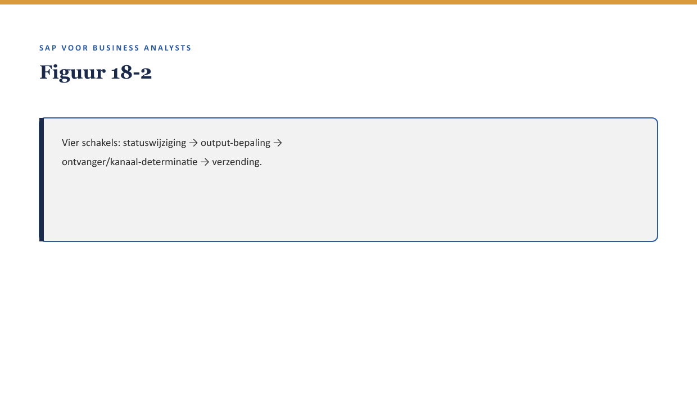

Deel 18 — Status, berichten & output
Reader · Niveau 2 Professional · Cursus SAP voor Business Analysts · Ductus
Leerdoelen
Na dit deel kun je:
- output-management uitleggen: hoe SAP correspondentie en notificaties genereert en verstuurt;
- het verschil benoemen tussen een statusverandering en de output die daaruit voortvloeit;
- determinatie (↗ deel 17) toepassen op de vraag wie welke notificatie ontvangt en via welk kanaal;
- beoordelen wanneer een ontbrekende notificatie een procesprobleem, een determinatieprobleem, of een technisch verzendprobleem is;
- een output-requirement schrijven die configureerbaar is (↗ deel 9 §5.2).
Studielast: één dagdeel klassikaal, circa drie uur zelfstudie.
1. De brief die nooit aankwam
Een polishouder klaagt: zij heeft nooit een bevestiging ontvangen van haar adreswijziging van twee maanden geleden — de wijziging staat wel correct in het systeem (deel 16 §4, status “verwerkt”), maar de communicatie erover is nooit bij haar aangekomen. Youssef: “Dit raakt drie aparte dingen die makkelijk door elkaar lopen: is de status wel goed, is de juiste output bepaald, en is die output daadwerkelijk verstuurd?”

2. Waarom dit voor de BA telt
Waarom dit voor de BA telt. “De klant heeft niets ontvangen” is, net als een rapportagegetal (deel 8) of een procesklacht (deel 3 §6), een symptoom dat meerdere oorzaken kan hebben. Een BA die deze drie schakels niet uit elkaar houdt, jaagt op de verkeerde oorzaak.
3. Output-management: van statuswijziging naar communicatie
Output-management is het mechanisme waarmee een statuswijziging (↗ deel 16 §4) automatisch leidt tot gegenereerde correspondentie: een brief, een e-mail, een portaalmelding. Dit is een aparte stap, los van de statuswijziging zelf — een BTX kan technisch correct de status “verwerkt” bereiken zonder dat de bijbehorende output ooit is gegenereerd.
Kernzin — Een statuswijziging en de output die eruit volgt zijn twee aparte gebeurtenissen met een eigen mogelijkheid om te falen. Beide moeten apart worden getoetst; het één garandeert het ander niet.
4. Wie ontvangt wat: determinatie toegepast op output
Net als bij organisatiestructuur (deel 17) bepaalt determinatie welke output naar wie gaat en via welk kanaal (post, e-mail, portaal). Dit voegt een extra schakel toe aan de drie uit §1: zelfs als output correct wordt gegenereerd, kan de determinatie van de ontvanger of het kanaal verouderd of verkeerd zijn — bijvoorbeeld wanneer een polishouder is overgestapt naar digitale communicatie, maar het systeem nog naar het oude postkanaal stuurt.

5. Drie mogelijke oorzaken van “de brief kwam nooit aan”
- De status is niet correct bereikt — een procesprobleem (↗ deel 16 §4).
- De output is nooit gegenereerd, ondanks correcte status — een configuratieprobleem in het output-mechanisme zelf.
- De output is gegenereerd maar naar het verkeerde kanaal of de verkeerde ontvanger gestuurd — een determinatieprobleem (↗ deel 17).
Een vierde, zuiver technische mogelijkheid (het verzendkanaal zelf faalde, bijvoorbeeld een mailserverfout) ligt buiten het BA-niveau van deze cursus, maar is goed om te kunnen uitsluiten in het gesprek met IT.
Kernzin — “De klant heeft niets ontvangen” is een symptoom met minstens drie verschillende, onderscheidbare oorzaken. De juiste vraag stellen (welke van de drie?) bespaart tijd die anders verloren gaat aan het onderzoeken van de verkeerde schakel.
6. Een configureerbare output-requirement
Marijke wenst: “Stuur altijd een bevestiging na een adreswijziging.” Met de vaardigheid uit deel 9 §5.2, herschreven: “Bij elke BTX van het type Change met betrekking tot het adres, genereer binnen 24 uur een bevestigingsbrief of -mail (op basis van de communicatievoorkeur van de polishouder) en registreer de verzending zelf ook als traceerbaar gebeuren (↗ deel 16, documentflow).” Dit laatste punt — de verzending zelf traceerbaar maken — is precies wat het onderzoek in §1 mogelijk had gemaakt zonder dat de polishouder eerst had moeten klagen.
7. Kruisverwijzingen
- ↗ Deel 16: statusmodellen als basis voor wanneer output wordt getriggerd.
- ↗ Deel 17: determinatie, hier toegepast op ontvanger en kanaal.
- ↗ Deel 3 §6, deel 8 §5: het patroon van een symptoom met meerdere mogelijke oorzaken.
Kernbegrippen
output-management · statuswijziging versus output · ontvanger-/kanaaldeterminatie · verzending traceerbaar maken
Samenvatting in vijf zinnen
- Output-management genereert correspondentie op basis van statuswijzigingen — een aparte stap die apart kan falen.
- Een statuswijziging garandeert niet dat de bijbehorende output ook daadwerkelijk is gegenereerd.
- Determinatie bepaalt niet alleen organisatietoewijzing (deel 17) maar ook wie welke output via welk kanaal ontvangt.
- “De brief kwam nooit aan” heeft minstens drie oorzaken: statusprobleem, output-generatieprobleem, of determinatieprobleem.
- Een goede output-requirement specificeert trigger, inhoud, kanaal, én maakt de verzending zelf traceerbaar.